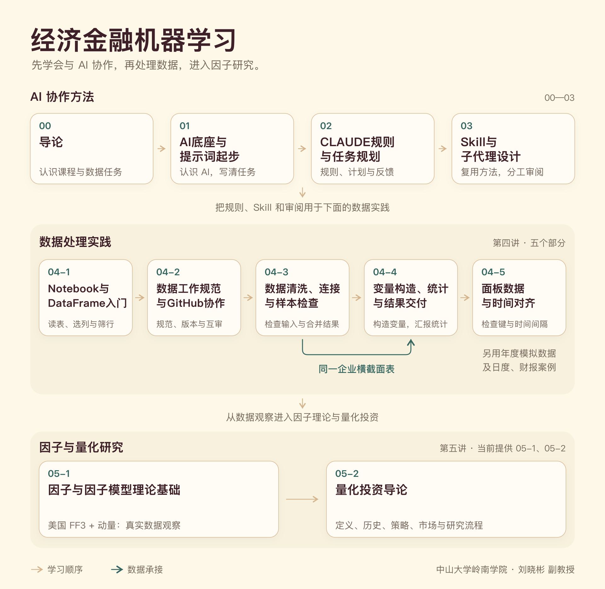

经济金融机器学习
中山大学岭南学院 · 刘晓彬 副教授

00-导论
62 页01-AI底座与提示词起步
102 页02-CLAUDE规则与任务规划
68 页03-Skill与子代理设计
47 页04-GitHub与Python数据处理-1-Notebook与DataFrame入门
35 页04-GitHub与Python数据处理-2-数据工作规范与GitHub协作
38 页04-GitHub与Python数据处理-3-数据清洗连接与样本检查
43 页04-GitHub与Python数据处理-4-变量构造统计与结果交付
36 页04-GitHub与Python数据处理-5-面板数据与时间对齐
33 页05-1-因子与因子模型理论基础
96 页05-2-中国量化历史与研究流程
103 页配套材料
04-3 数据清洗、连接与样本检查
解压后打开“04-3-参考答案”文件夹，按 README 选择课程内核，运行“04-3-清洗与连接.ipynb”。数据字典、处理原则、课堂任务和交付说明均在包内；Notebook末尾附参考解答。
05-1 因子与因子模型理论基础
解压后打开“05-1-课堂材料”，按 README 运行“05-1-四因子观察.ipynb”。包内提供美国 FF3 与动量月度数据（1927-01—2026-08）、官方原始文件、数据字典和合并脚本，用于观察时间轨迹、分布与相关性。
05-2 为历史与研究流程课件，无独立学生包。其他部分的学生材料由教师另行提供。